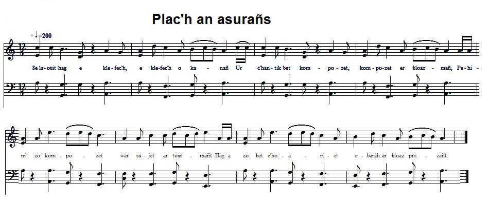

| Ce chant a été également publié par Luzel dans Gwerzioù I, p. 117 sous le titre "Ar Vatezh vihan", La petite servante, mais sans indication d'origine. Duhamel n'a pas donné de mélodie. La mélodie ci-dessus, une ridée du pays vannetais (6 temps) épouse la structure du chant: vers à 13 pieds. | This song also was collected by Luzel and published in "Gwerzioù I", on page 117, unter the title "Ar vatezh vihan" (The little Maid). The origin is not mentioned. Nor is the tune in Duhamel's tune collection. The above melody, a 6-beat "ridée" dance from the Vannes country scans the 13 foot verse lyrics. |
|
BRETON (Version KLT) page 46 Plac'h an Asurañs [1] 1. Selaouit hag e klefec'h, e klefec'h o kanañ Ur c'hantik bet kompozet, kompozet er bloaz-mañ, Pehini zo kompozet war sujet an tourmañt [2] Hag a zo bet c'hoariet e-barzh ar bloaz prezañt. 2. Gweloud a rit ar gwez zo torret ha disklozet Ha kalz e-mesk anezhe deus an douar displantet, Ar gwer-douar an ilizoù zo torret ha brevet; Kalz a tied zo torret, brevet ha distoet. 3. Beteg al loened mud 'deus klevet mouezh an avel Gwentet eo bet ar boued, siwazh, en ur gartel: Aet int toud gant an avel, O Doue, pebezh ravaj! N'eus den e-barzh an douar 'vit nombriñ an domaj... 4. Nombr bras a valeurioù zo erruet er bloaz-se E-barzh en ur gerig hag a zo hañvet Gwitre. [3] Ennañ zo ur plac'h yaouank a oa o servijiñ E-barzh ti un ofisour, barzh un ostaliri. [4] 5. Ur merour en-devoa kalzig a arc'hant dezhañ: Ar somm oa pemp kant skoed. Eñ lare "en avertissant" [5] Da zoned prompt da paeañ, pa a vezi kuitaet Ar merour pa glevaz, da kavout e vestr eo aet. page 47 6. Ar merour pa glevaz, da kavout e vestr eo aet. Eizh devezh a amzer digantañ e-neus goulet. - E lec'h eizhtez, va mignon, c'hwi a-pezo pemzek, - Kar me rento an arc'hant en devezh po laret. [6] 7. - Kar me ne vin ket d'ar ger, mez kavout rit ho kouitañs Pa vo rentet an arc'hant da plac'h an asurañs. - Pa bet deuet an deiz, da gas an arc'hant eñ eo bet, Mez n'eus ket bet e guitañs, kar n'eus ket hen goulet. 8. A-benn un nebeud goude, 'n aotroù d'ar ger zo deuet: - Rentet eo va arc'hant amañ gant va merour? - Ar plac'h a oa prezañt e-devoa respontet: - Dre va leal, emezi, n'am-eus ket hen gwelet. - 9. An aotroù-mañ bremañ zeue d'en em fachañ. Dre ma eñ a oa den honestañ deue d'eñ avertisañ Da zoned prompt da paeañ pe a vezi kuitaet, Lakaet gwerzh war e dañvez ha d'oc'h ar plas renvoyet. 10. Ar merour pa glevas, da gavout e vestr eo aet. - Evit petra, va mestr, 'm-eus ho tisoblijet? - Goap 'peus graet eus ac'hanon gant e foetet ma zañvez, Med me a ray dit bremañ mont d'ar prizon da vreinañ. 11. - Me 'm-eus rentet an arc'hant da plac'h an asurañs. Mes bremañ, p'emaoc'h d'ar ger, c'hwi ray din-me kouitañs. - 12. Pa oa galvet ar plac'h vit goulenn an arc'hant, Ar plac'h en em fachas ha zeu en un instant. Da douiñ ha da lared n'he-devoa ket hen gwelet, Pe e zeu, korf hag ene holl, gant an drouk spered. page 48 13. Ar menour-mañ, bremañ, komañsas da ouelañ: - 'Troù Doue, va Doue, petra rin-me bremañ? - Degas ar plac'h d'an iliz, dirak an Aotroù Doue, Evit goût dirag Doue mar zo ar memez le. 14. Pa erruas en iliz evit touiñ al le, N'ouzhon penaos an douar en un tan ne lonke. Ar merour-mañ, bremañ, a ya d'ar ger en ur ouelañ Hag an diaoul war e lerc'h a oa erruet gantañ. [7] 15. Gwisket vel ur bourc'his a c'houlenne digantañ: - Petra c'hoar dit va mignon, pa na rez 'med gouelañ? - Rezon am-eus, emezañ, pa n'am-eus-me kouitañs; Rentet am-eus-me arc'hant da plac'h an asurañs. 16. - Deus ganin, lar an diaoul, deus ganin d'an noblañs! Deus ganin, ha me ray dit da gavout-te kouitañs. 'Ma en arc'hant gant ar plac'h lakaet en ar golc'hed [8] Ha kalz a draoù all he-devoa-hi laeret. [9] - 17. An diaoul a goulenne pa errue en noblañs Perak ne viret deus an den e guitañs. - Rezon 'm-eus, pa n'am-eus va arc'hant! - Tec'h aze, eme an diaoul, se zo ur gaou patant. 18. 'Ma an arc'hant gant ar plac'h lakaet en ho kolc'hed Ha kalz a draoù all he-devoa-hi laeret. - Ma oa 'r kolc'hed furchet en-doa aze kavet: Penn kavas ar pemp kant skoed ha kalz a draoù laeret. page 49 19. E voa galvet ar plac'h hag evit goul an arc'hant - Toue-ta, eme an diaoul, toue, mar out ur gristen, Pe an diaoul te 'tougo, mar peus anezhañ laeret. - Nec'het awalc'h nac'h a ra, nac'h a ra he fec'hed. 20. Nec'het awalc'h nac'h a ra, nac'h a ra he fec'hed: - An tan hag ar gurun me devo mar 'meus anezhan! - Raktal en un instant an tourmañt zo digoret. Beteg an amezeien en em gave estonet. 21. - O itron Santez Barba, me ho ped e spered! - [10] Hag ar plac'h, korf hag ene, zo aet gant an drouk spered. Betek ar parkad balan a oa e-kichen ganti Peder arre deus ar parkoù a zo aet an douar dindani. Transcription KLT: Christian Souchon |
FRANCAIS page 46 La femme de confiance 1. Ecoutez et vous entendrez, vous entendrez chanter Une chansonnette composée, composée cette année, Ce chant a pour sujet la tourmente Qui est survenue au cours de l'année présente. 2. Comme on le voit, les arbres sont cassés ou bien renversés Et nombre d'entre eux furent de la terre arrachés, Les vitraux des églises sont brisés en mille morceaux; Bien des maisons sont détruites, broyées et sans toit. 3. Les animaux muets ont eux aussi entendu la voix du vent Et dans tout un quartier, leur fourrage, hélas, est parti au vent: Parti au vent, mon Dieu, quel ravage! Il n'est personne au monde qui puisse évaluer les dommages... 4. Nombreux sont les malheurs qui frappèrent, cette année, La petite ville qu'on appelle Vitré. Il y avait là une jeune fille au service D'un officier, dans une auberge. 5. Un fermier devait beaucoup d'argent à son maître: La somme de cinq cents écus. Il lui fit dire, à titre d'avertissement, De venir la payer rapidement, sinon il serait congédié. Le fermier, quand il l'apprit, alla trouver son propriétaire. page 47 6. Le fermier, quand il l'apprit, alla trouver son propriétaire. Il lui a demandé un délai de huit jours. - Ce n'est pas 8 jours, c'est 15 jours de délai que j'accorde, mon ami. - Je verserai l'argent le jour que vous direz. 7. - Je ne serai pas à la maison, mais vous aurez votre quittance Délivrée par ma femme de confiance quand vous lui aurez remis l'argent. - Quand vint le jour de payer la dette, La quittance ne fut pas délivrée, car il omit de la réclamer. 8. Peu de temps après, le monsieur est rentré chez lui: - Mon fermier a-t-il acquitté sa dette? - La fille qui était présente répondit: - Parole d'honneur, je ne l'ai pas vu. - 9. Pour le coup le monsieur s'est fâché. Comme il était l'homme le plus honnête, il fit avertir son fermier De venir rapidement le payer sous peine d'être congédié, De voir ses biens vendus et d'être contraint de déguerpir. 10. Aussitôt le fermier se rend chez son propriétaire. - En quoi, Monsieur, vous ai-je désobligé? - Tu te moques de moi, toi qui gaspilles mon bien, Mais je m'en vais te faire pourrir en prison. 11. - Mais j'ai payé ma dette à votre femme de confiance. Maintenant que vous êtes rentré, vous allez me donner ma quittance. - 12. On convoqua la fille pour qu'elle remette l'argent. Celle-ci, en colère, accourut aussitôt. Sur la foi du serment, elle dit qu'il n'était pas venu la voir, Ou sinon, que l'esprit malin l'emporte, corps et âme. page 48 13. Alors le fermier s'est mis à pleurer: - Mon Dieu, mon Dieu, que vais-je faire? - Il traîne la fille jusqu'à l'église, devant l'autel, Pour voir si elle oserait réitérer son serment. 14. Et là, à l'église, elle renouvela son serment, Je ne sais comment la terre ne sait pas ouverte pour la consumer. Alors, le fermier rentre chez lui en pleurant Suivi du diable qui passait par là, 15. Habillé en citadin, et qui lui demanda: - Qu'est-ce qui ne va pas, mon ami, pourquoi pleures-tu comme ça? - J'ai bien motif de pleurer: je n'ai pas ma quittance; Et pourtant j'ai payé mon dû à la femme de confiance. 16. - Viens avec moi, lui dit le diable, allons au manoir! Viens avec moi et je te ferai avoir ta quittance. La fille a caché l'argent sous un matelas Avec pas mal d'autres choses qu'elle a dérobées. - 17. Et le diable demanda en arrivant au manoir Pour quelle raison on refusait à cet homme sa quittance. - La raison, c'est que je n'ai pas mon argent! - Pas du tout, dit le diable, c'est complètement faux!. 18. L'argent a été mis sous votre matelas par votre femme de confiance Avec bien d'autres choses qu'elle a volées. - On fouilla le matelas jusqu'à ce qu'on y trouve Les cinq cents écus qu'elle avait détournés. page 49 19. La fille fut convoquée et on lui demande l'argent - Jure donc, dit le diable, jure, si tu es chrétienne, Sinon le diable va t'emporter, pour avoir volé cet argent. - Bien embarrassée, elle nie, elle nie sa faute. 20. Bien embarrassée, elle nie, elle nie sa faute. - Que le feu et le tonnerre me consument, si j'ai cet argent! - En un instant, une tourmente se déchaîne: Les gens du voisinage en restent éberlués. 21. - Madame Sainte Barbe, O sauvegardez-nous! - Et la fille fut livrée, corps et âme à l'esprit mauvais. Jusqu'au champ de genêt qui était à côté, Quatre ares de champs furent emportés sous elle! |
ENGLISH page 37 The breach of trust 1. O listen all, O listen all, and you shall hear A ditty that was made in the course of the year, The subject matter is the storm that suddenly Broke out during the year and harried the country . 2. As you see, many trees are broken-branched and shorn A good many of them up by the roots were torn Stained-glass windows in churches blown to smithereens; Many houses smashed with their roofs ripped off them. 3. Innocent animals by no means better fared: Hay, fodder and forage by the gale were not spared. All is gone with the wind, my God! Such ravages! Nobody on earth may assess the damages... 4. So many hardships have, in fact, during the year Occurred in the little town Vitré, far and near! There was a young girl who was an officer's maid But in an inn in town for her a room he paid. 5. His tenant farmer owed him a lot of money: Five hundred crowns. The gentleman warned him fairly He was to pay him soon, or he would be dismissed. The farmer decided to pay him a visit. page 47 6. And the farmer went to his manor right away. He asked for a further extension of eight days. - You ask for eight days, I give a fortnight instead, - I shall pay my debt on that day, the farmer said. 7. - Though I shan't be in town, you shall have your receipt. Pay to my trusty maid and there will be no cheat. - On the appointed day he came and paid his debt, To ask for a receipt, alas, he did forget. 8. A short time afterwards, the gentleman returned: - Did my farmer at last pay, as he has been warned? - The girl who was present said hypocritically: - I swear you that I did not see anybody. - 9. This caused the gentleman to be very angry. But being a decent man, he let him know frankly: Either he pays or he will face the worst disgrace. All his goods will be sold and he must leave the place. 10. The farmer right away knocked at his master's door - Did I do anything, master, that makes you sore? - You're making fun of me, waste my good quite a lot But I will see to it that in prison you rot. 11. - I gave the money to your representative: Now that you are at home, I must my bill receive. - 12. The girl was summoned to give back the money, She reported at once and was very angry, Declared that never had she met this man before; If she lied, the Devil might take her, so she swore. page 48 13. The farmer now began to cry right bitterly: - 'My God, my God, help me! This is sheer trickery! - He drags the girl to church, anxious to prove the cheat, To test if she would dare false witness to repeat. 14. In church the liar girl, reiterated her oath! Why were, to engulf her, earth and hell's fire loath? The farmer returned home, and he wept in despair. Followed by the devil who happened to be there. 15. Clad like a town dweller, he asked the poor wretch: - What is, my friend, the cause of the sighs that you fetch? - I have reasons to cry: I'm denied a receipt For the money I gave a not trustworthy cheat. 16. - Come on, the devil said, let's go to the manor! Come with me, I shall get your bill in my manner. By the girl the money was stuck in a mattress Along with many things she stole in long practice. - 17. The devil asked, as soon as he passed the threshold, When a receipt is due, why do you it withhold? - I've a right to do so, as long as I'm not paid! - Not at all, not at all! That's a damned lie you said. 18. The money, by the girl, was stuck in your mattress, Along with many things she stole in long practice. - When the mattress was searched, the money was found there: Five hundred crowns and more treasures in the same lair. page 49 19. The girl was called again, enjoined to give the gold. - Swear it, the devil said, as did Christians of old, Swear it, or the devil takes you with him to hell! - Ill-at-ease she denied the theft. What evil spell, 20. What evil spell had called over herself that thief! - Fire and lightning char me, if I caused any grief! - And all of a sudden, a fierce tempest broke out. The neighbourhood people are astounded and shout: 21. - O Holy Barbara, protect us from the fire! - Body and soul, she fell to the devil's empire. All the way up to the adjoining field of broom Four acres of soil were ripped off, her yawning tomb! Translated by Christian Souchon (c) 2014 |
|
[1] Plac'h an asurañs: La "fille de l'assurance", dans la traduction de Donatien Laurent. Cette curieuse expression est utilisée dans la version de Luzel d'une autre façon: "Pa oa [d'ar merer] lakaet an (e) asurañs", qu'il traduit par "quand [le fermier] eut pris assurance" et commente ainsi dans une note: "assurance de jouissance accordée au fermier à chaque paiement". "Lakaat" signifie "poser, mettre" et non "prendre" (qui se dit "kemer"). Il s'agit donc plutôt d'un engagement à exploiter un fonds dans des conditions déterminées que l'on fait signer au fermier. En échange de quoi, l'intermédiaire chargée par le propriétaire de la transaction aurait dû lui remettre la quittance ("kouitañs") signée par son mandant. [2] An tourmañt: Les strophes 1 à 3 décrivent par avance, la catastrophe, provoquée par le parjure de la servante, décrite dans les deux dernières strophes. Ce n'est pas le cas dans la version de Luzel qui fait état, elle aussi, de cette "tourmente". Francis Gourvil et d'autres critiques affirment que ce procédé littéraire est étranger aux gwerzioù authentiques qui entrent toujours dans le vif du sujet. Le présent texte (que La Villemarqué s'est abstenu de publier) apporte la preuve du contraire. [3] Gwitre: Le manuscrit de Keransquer appelle la ville "Kitré", mais le mot est surchargé en "Vitré" (en breton, "Gwitre"). [4] E ti un ofisour, barzh un ostaliri: [Qui servait] chez un officier, dans une auberge. On peut interpréter cette phrase sibylline, en supposant que la servante dormait à l'auberge et servait de jour chez l'officier. Dans aucune des deux versions la nature des liens qui unissent le propriétaire et sa "femme de confiance" n'est clairement explicitée (cf. note 8). [5] En avertissant: Ces mots apparemment français dans le texte breton semblent se rapporter à une procédure officielle de mise en demeure. Dans la version Luzel, le propriétaire "lakaz ar serjant da vonet d'eñ kavout", "[lui] envoya le sergent". C'est à la même procédure que l'officier a recours, strophe 9 (mais "avertisañ" est ici un verbe "breton"). [6] Kar: Le mot français "car" est utilisé 3 fois dans les strophes 6 et 7, mais il n'y a guère que dans la phrase "il n'a pas eu sa quittance car il ne l'a pas demandée" que l'on peut logiquement donner à ce mot son sens d'origine. Il faut en outre, pour que ce dialogue ait un sens, supposer que c'est le fermier, et non l'officier, qui prononce la dernière phrase de la strophe 6: "Je rendrai l'argent le jour que vous aurez dit". [7] An diaoul: Le diable. Le rôle de défenseur de la morale que le diable joue ici est assez surprenant. La version Luzel confie cette tâche d'intercesseur à deux personnages différents: le sergent de ville qui vient chercher le fermier et le relève lorsqu'il perd connaissance, puis un jeune gentilhomme que le fermier rencontre en revenant de la confrontation avec la servante. Six strophes plus loin on comprend qu'il s'agit du diable. [8] Golc'hed: La Villemarqué avait noté "colleret" pour "golc'hed kolo" qui désigne une paillasse. S'il a bien transcrit ce qu'il a entendu, au début de la strophe 18 la forme mutée "ho kolc'hed" (votre paillasse) se rapporte au matelas de l'officier, ce qui n'est pas le cas dans la version Luzel, où l'argent volé se trouve "en ur yalc'had en golc'hed da wele" (dans une bourse, dans la paillasse de ton lit). [9] Ha kalz a draoù all he-devoa-hi laeret: "Et beaucoup d'autres choses qu'elle avait volées" une phrase qui revient trois fois (str.16 et 18), comme La Villemarqué l'a noté en français à la première ligne de la strophe 19. Dans la version Luzel il est dit: "Mar zo bet lazhet...tri mevel-bras 'n ho ti/ Ez eo ho matezh a zo kiriek da-ze" "Si trois grands-valets furent tués chez vous/ La faute en incombe à votre servante". De ce fait, c'est le propriétaire qui tombe trois fois à terre et qui est relevé par le diable (les gwerzioù affectionnent tout ce qui va par trois)! Contrairement à la version de Keransquer qui voit en lui "den honestañ" (le plus honnête des hommes, str.9, vers 2), celle de Luzel prête au seigneur, qui a laissé condamner à mort trois innocents, bien moins de grandeur d'âme. Une dernière mesquinerie lui est imputée. Puisque la fille lui appartient, le diable qui va enlever cette dernière laisse à son maître le choix de la méthode: le feu qui détruira son manoir, ou le vent qui causera des dégâts moindres, mais moins ciblés. C'est ce dernier procédé qui sera retenu. La fille sera lancée par le vent au milieu de la retenue d'un moulin. Un jeune meunier lui tend la main pour lui venir en aide, mais... "Ar fulor euz an arc'hant hag ar plac'h milliget O-deus bet, beteg e skoaz, brec'h ar meliner devet: Setu enor ha profit denner euz ar merc'hed!" "La fureur de l'argent et la fille maudite Lui ont brûlé le bras jusqu'à l'épaule. Voilà l'honneur et le profit qu'on retire des femmes." C'est sur cette édifiante maxime que s'achève la version Luzel. [10] Santez Barba: Sainte Barbara, est comme Saint Laurent une spécialiste de la pyrotechnique! Le système de fermage visé par cette gwerz est sans doute celui auquel sont soumis les "féagers"-fermiers plutôt que les "domaniers" ou "convenanciers", car le mot "convenant" (br. "koumanant") n'apparaît pas dans le texte. (cf. Les Laboureurs, "Arguments et notes"). |
[1] Plac'h an asurañs: The "girl of the deed", "the insurance girl" in Donatien Laurent's translation. This weird expression is used in Luzel's version in another queer way: "Pa oa [d'ar merer] lakaet an (e) asurañs", translated as "when [the tenant-farmer] had taken out insurance" and commented as follows in a foot note: "formal assurance of usufruct given to the tenant on each payment of the rent". However, "lakaat" means "to lay, to put" and not "to take" (in Breton, "kemer"). Therefore the word should rather imply a commitment to manage an estate in compliance with conditions imposed by the owner on the farmer who accepts them by appending his signature. In return, the representative entrusted by the owner with the transaction ought to have handed him out a receipt signed by the principal . [2] An tourmañt: Stanzas 1 with 3 describe in anticipation the catastrophe caused by the maidservant's false witness referred to in the last two stanzas. It is not so in Luzel's version though the "tourmañt" (gale) is also mentioned in it. Francis Gourvil and other critics maintain that this literary trick does not belong in authentical Breton laments, which usually get abruptly to the heart of the matter. The text at hand (that La Villemarqué did not publish) gives contrary evidence. [3] Gwitre: The first Keransquer copybook names the town "Kitré", but the word is overwritten to "Vitré" (in Breton, "Gwitre"). [4] E ti un ofisour, barzh un ostaliri: [Who served] at an officer's, in an inn. We may interpret this confusing passage as follows: the maidservant would sleep in the inn and have daytime duty at the officer's house. In neither version is the exact relationship between the estate owner and his "insurance girl" clearly explained (see note 8). [5] En avertissant: These French sounding words in the Breton text apparently refer to formal demand proceedings. In Luzel's version, the owner of the estate "lakaz ar serjant da vonet d'eñ kavout", "sent [to him] a bailiff". These proceedings are reiterated by the officer in stanza 9 (though "avertisañ" is in this latter case a "Breton" verb). [6] Kar: The French loanword "car" (because) is used three times in stanzas 6 and 7, but only in the sentence "he does not have his receipt because he omitted to ask for it" may we assign to this word the meaning it has in the original language. Besides, we must assume, to make this dialogue understandable, that it is the farmer, not the officer, who tells the last sentence in stanza 6: "I shall give back the money the day you choose". [7] An diaoul: The devil. That the devil should play in this song the part of a defender of moral standards is somewhat surprising. In Luzel's version this advocate's part is played by two different characters: a constable who comes to fetch the farmer and helps him up when the latter faints; and a young nobleman whom the farmer encounters on his way back from the confrontation with the maidservant. Six stanzas further it appears that this man is none other than the devil. [8] Golc'hed: La Villemarqué had written "colleret" for "golc'hed" meaning "[straw] mattress". If he correctly jotted down what he heard, at the beginning of stanza 18, the shifted form "ho kolc'hed" (your mattress) refers to the officer's mattress, unlike in Luzel's version which states that the stolen money is kept "en ur yalc'had en golc'hed da wele" (in a purse, in the mattress of your bed). [9] Ha kalz a draoù all he-devoa-hi laeret: "And many other things she had stolen". This sentence is reiterated three times (st.16 and 18), as noted in French by La Villemarqué on the first line of stanza 19. In Luzel's version we read: "Mar zo bet lazhet...tri mevel-bras 'n ho ti/ Ez eo ho matezh a zo kiriek da-ze" "If three stewards were killed in your house/ Your maid must be blamed for that". Consequently, it is the landowner who faints three times and is helped up by the devil (it is well known that "gwerzioù" are fond of triads)! Unlike the Keransquer version that considers the officer "den honestañ" (a thoroughly decent man, stanza 9, line 2), Luzel's version ascribes to the lord, who permits that three innocent men be put to death, far less nobility of soul. A last meanness on his part is reported. Since the girl is the nobleman's servant, the devil who prepares to take her away, allows him to choose by means of which element he is to do it: fire that will burn down his manor, or wind that will cause lesser but wider spread damages. The gentleman chooses, of course, the latter possibility. The girl is thrown by the gale right to the middle of a mill-pond. A young miller reaches out his arm to prevent her from drowning, but... "Ar fulor euz an arc'hant hag ar plac'h milliget O-deus bet, beteg e skoaz, brec'h ar meliner devet: Setu enor ha profit denner euz ar merc'hed!" "The accursed girl and her passion for money Have burnt his arm up to the shoulder. Such honours and benefits are conferred by women." Luzel's version concludes with this edifying maxim. [10] Santez Barba: Saint Barbara, like Saint Lawrence, is ascribed pyrotechnics skills! The farm rent system addressed in this gwerz is very likely that applying to the "féagers"- tenant farmers, rather than to the "domaniers" or "convenanciers" - covenant holders, since the word "covenant" (Breton: "koumanant") is not used in this text. (see. The Ploughmen, "Arguments et notes"). |